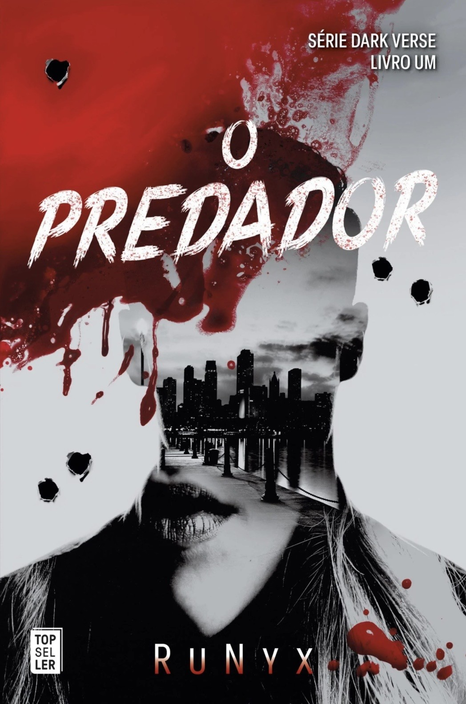

✦
Caras Leitoras & Leitores,
Sejam bem-vindos ao nosso mundo! Somos três amigas que partilham o amor pelos livros.
O meu nome é Nadia Irina, tenho 25 anos e sou especialista em Marketing e Publicidade. Adoro ver filmes e séries, adoro escrever, escrevi recentemente um livro de poemas em inglês (My Scars Are Bleeding) num fim de semana em que me senti inspirada. Um dos meus hobbies preferidos é ler, histórias dramáticas, para ser mais específica, adoro a sensação de estar a morrer de curiosidade e de não conseguir pousar um livro, adoro a montanha-russa de emoções que as histórias de drama me proporcionam.
A Sara Rebeca é minha irmã mais velha, tem 27 anos, é licenciada em Psicologia e trabalha como assistente administrativa no negócio da nossa família. Adora analisar emoções, pensamentos e sempre gostou de contar-me histórias e de ler-me livros. O género preferido dela é a ficção e consegue devorar este tipo de livros em poucos dias!
A Nádia Filipa (sim, somos duas!) tem 27 anos e é assistente de medicina dentária. É uma rapariga doce e extrovertida, desenvolveu desde pequena o gosto pela escrita e pelos livros. Adora ler romances e dramas pesados, daqueles que partem o coração.
Conhecemo-nos há cerca de cinco anos e desenvolvemos rapidamente uma amizade muito forte. Encontrávamo-nos na mesma fase da vida: saíamos em grupo todas as noites e, por vezes, ficávamos a beber e a ter longas conversas até de manhã. Vivemos juntas o início dos nossos 20 anos, com o passar do tempo, fomos amadurecendo. Por sorte do destino, caminhamos ao mesmo ritmo, a Sara já saiu de casa e mora com o namorado, e as 'Nádias' têm planos de fazer o mesmo no final deste ano.
Felizmente, conseguimos manter a nossa ligação, em parte, através das leituras. Enchemos o nosso grupo de WhatsApp com listas de livros, reviews pormenorizadas e tanta conversa do dia a dia que fica difícil de acompanhar! Foi assim que nasceu a ideia deste blogue: queríamos ter um sítio bonito e cuidado para publicar as reviews que fazemos com tanta dedicação e partilhar as nossas opiniões. Gostamos da ideia de ajudar as pessoas a encontrar o livro perfeito para elas. Espero que gostem tanto de as ler como nós gostamos de as escrever.
— Sinceramente,
Nadia, Sara e Nádia Filipa.
Ultimamente...
Recomendações do Mês
Corrupt
★★★★☆
"E apesar de ter sido sempre ela a observar-me enquanto crescíamos isso não significava que eu também não estivesse atento a ela. Ainda me lembro do dia em que ela nasceu. Há dezasseis anos, onze meses e dezoito dias. Naquela manhã fresca de novembro."

Intocável
★★★★☆
"Sou tocada por um milhão de chamas e engulo outro milhão. Olha-me fixamente como se nunca antes me tivesse visto. Quero lavar a alma no azul sem fundo daqueles olhos.” - Juliette Ferrars